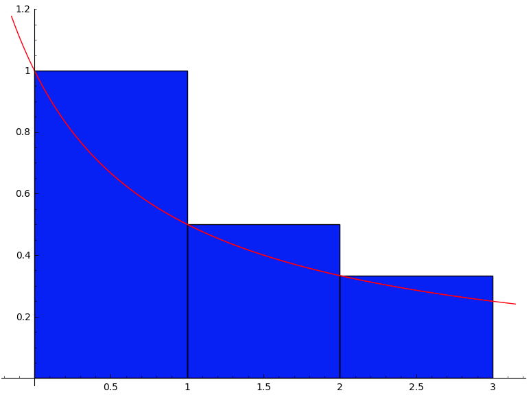

Section 5.1 Notation sigma et sommes de Riemann
¶Voici un calculateur de sommes de Riemann laissant le choix entre trois méthodes de subdivision à pas constant privilégiant les points de gauche, ceux de droite, ou ceux du milieu.
Exercice 5.1.1.
Explicitez les termes des sommations suivantes.
\(\displaystyle\sum_{i=4}^9(-1)^i2^{i-1}\)
\(\displaystyle\sum_{k=1}^5\frac{2k-1}{(k-1)!}\)
\(\displaystyle\sum_{j=2}^4\left(-1\right)^{j-1}(j^2-2)\)
\(\displaystyle\sum_{k=0}^7\cos\left(\frac{n\pi}{2}\right)\)
\(\displaystyle\sum_{i=0}^3(-1)^ix^i\)
\(\displaystyle\sum_{i=0}^na_ix^i\)
\(\displaystyle\sum_{k=1}^{+\infty}\frac{1}{k}\)
\(\displaystyle 8-16+32-64+128-256\)
\(\displaystyle 1+3+\frac{5}{2}+\frac{7}{6}+\frac{9}{24}\)
\(\displaystyle -2+7-14\)
\(\displaystyle 1+0-1+0+1+0-1+0\)
\(\displaystyle 1-x+x^2-x^3\)
\(\displaystyle a_0+a_1x+a_2x^3+\ldots+a_nx^n\)
\(\displaystyle 1+\frac{1}{2}+\frac{1}{3}+\frac{1}{4}+\ldots\)
Exercice 5.1.2.
Utilisez le symbole \(\Sigma\) pour représenter les sommes suivantes.
\(\displaystyle 8-16+32-64+128-256\)
\(\displaystyle\frac{2}{3}-\frac{4}{5}+\frac{6}{7}-\frac{8}{9}+\frac{10}{11}\)
\(\displaystyle 1+3+5+\cdots+(2n-1)\)
\(\displaystyle \frac{1}{4}\left(\frac{1^2}{4^2}+\frac{2^2}{4^2}+\frac{3^2}{4^2}+\frac{4^2}{4^2}\right)\)
\(\displaystyle\sum_{i=4}^9(-1)^i2^{i-1}\)
\(\displaystyle\sum_{j=1}^5(-1)^{j+1}\frac{2j}{2j+1}\)
\(\displaystyle\sum_{k=1}^n(2k-1)\)
\(\displaystyle\frac{1}{4}\sum_{k=1}^4\left(\frac{k}{4}\right)^2\)
Exercice 5.1.3.
Évaluez les sommes suivantes à l'aide des formules et des théorèmes.
\(\displaystyle\sum_{i=21}^{78}i^3\)
\(\displaystyle\sum_{i=1}^{37}(5i-4)^2\)
\(\displaystyle\left(5+\frac{1}{11}\right)+\left(5+\frac{2}{11}\right)+\left(5+\frac{3}{11}\right)+\cdots+\left(5+\frac{29}{11}\right)\)
\(\displaystyle 9448461\)
\(\displaystyle 411847\)
\(\displaystyle\frac{2030}{11}\)
Exercice 5.1.4.
Utilisez les formules de sommation pour exprimer les sommes suivantes en fonction de \(n\text{.}\)
\(\displaystyle\sum_{i=1}^{n}\left(2+\frac{3i}{n}\right)\)
\(\displaystyle\sum_{i=1}^n\left(1+\frac{2(i-1)}{n}\right)^2\)
\(\displaystyle\frac{7n}{2}+\frac{3}{2}\)
\(\displaystyle\frac{13n}{3}-4+\frac{2}{3n} \)
Exercice 5.1.5.
Représentez graphiquement et évaluez.
\(s_3\) et \(S_3\) si \(\displaystyle f(x)=\frac{1}{x+1}\) sur \([0\,;\,3]\)
\(s_4\) et \(S_4\) si \(\displaystyle f(x)=x^2+4x+3\) sur \([1\,;\,3]\)
-

\(\displaystyle s_3=\frac{13}{12}\)
\(\displaystyle S_3=\frac{11}{6}\)
-
\(\displaystyle s_4=26,75\)
\(\displaystyle S_4=34,75\)
Exercice 5.1.6.
Soit \(g(x)=x^2+4x+3\) sur \([1\,;\,3]\text{.}\)
Évaluez \(\displaystyle s_n\text{.}\)
Évaluez \(\displaystyle S_n\text{.}\)
En déduire la valeur de l'intégrale définie \(\int_1^3 f(x)\,dx\text{.}\)
\(\displaystyle s_n=\frac{92}{3}-\frac{16}{n}+\frac{4}{3n^2}\)
\(\displaystyle S_n=\frac{92}{3}+\frac{16}{n}+\frac{4}{3n^2}\)
\(\displaystyle \frac{92}{3}\)